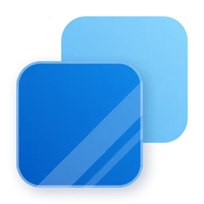
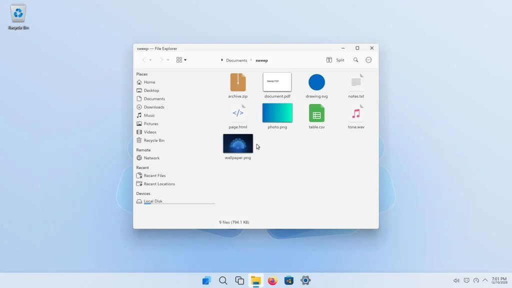
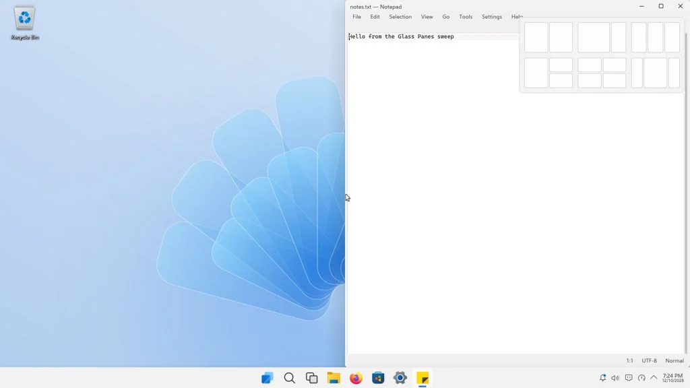
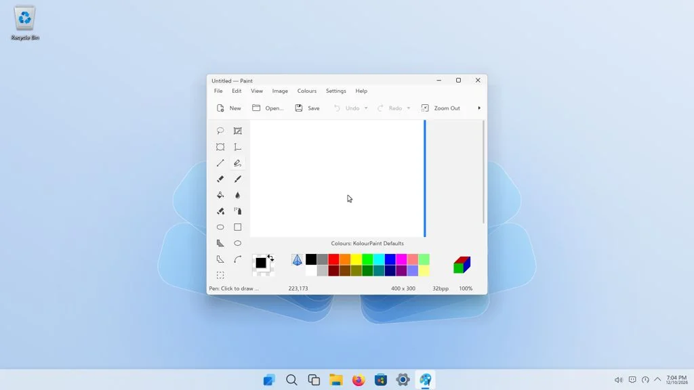
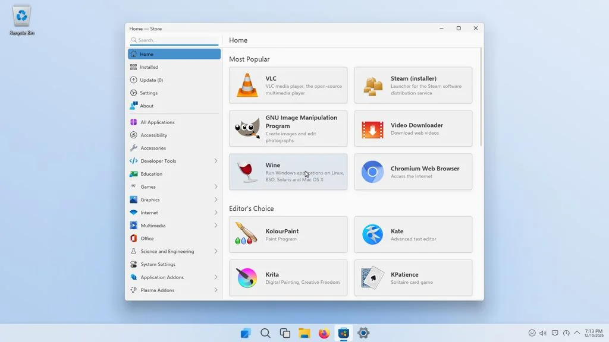
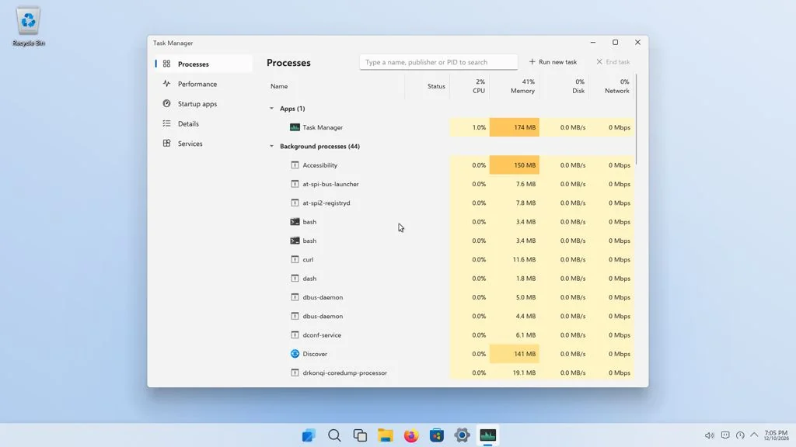
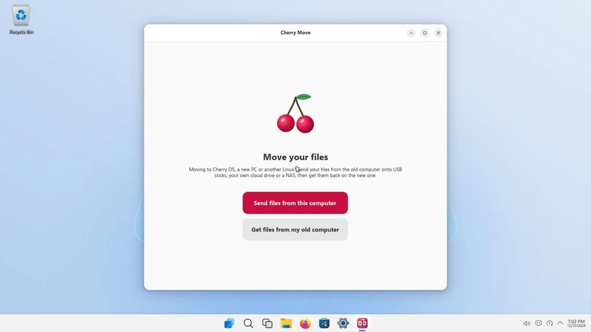

Glass Panes
A Windows 11-style desktop on Debian 13, free of ads, bloat and forced restarts.
Download for PC (ISO)Operating system






About Glass Panes
Glass Panes is a Linux operating system that looks and works like Windows 11. The taskbar is centred, Start and Search are where you expect them, and the Windows keyboard shortcuts work, including Win+E, Win+I, Win+R, Win+X, Win+L and Win+Z.
Underneath it is Debian 13 with KDE Plasma. It is light, free of adverts and bloatware, and it does not restart itself for updates. Glass Update installs security updates and Store app updates when you ask it to.
Everyday apps have familiar names: File Explorer, Notepad, Paint, Photos, Snipping Tool, Calculator, Terminal and Disk Management. Windows programs (.exe and .msi) install and run with a double-click.
The Store installs apps from Debian and Flathub. The Cherry Store is included as well, and Cherry Move can bring your files across from an old Windows, Mac or Linux computer.
Glass Panes has its own logo and artwork. It is not affiliated with or endorsed by Microsoft. Windows is a trademark of Microsoft Corporation.
Features
- Centred taskbar, Start menu and Search
- Windows keyboard shortcuts, including snap layouts (Win+Z)
- Settings, Task Manager, File Explorer and Quick Settings
- Windows .exe and .msi programs with a double-click
- Store for Debian and Flathub apps, plus the Cherry Store
- Cherry Move for files from an old Windows, Mac or Linux PC
- Narrator (Win+Ctrl+Enter) and a lock screen (Win+L)
- Glass Update, without the PC restarting itself
- Debian 13 underneath, with no ads or bloatware